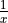
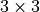

Lezione 6.1 - Python: Liste, concetti avanzati
Metodi Stringhe-Liste
Ritorna |
Metodo |
Significato |
|---|---|---|
|
|
Rompe una stringa in una lista di stringhe |
|
|
Ricompone una lista di stringhe in una stringa |
Esempio. La lista di stringhe:
tabella = [
"nome,cognome,numero di premi nobel vinti",
"Albert,Einstein,1",
"Marie,Curie,2",
]
che riporta informazioni su personaggi noti in tre colonne separate da
virgole ",".
Estraggo i titoli delle colonne dall’intestazione (la prima riga della
tabella) con split():
titoli_colonne = tabella[0].split(",")
print(titoli_colonne)
print(type(titoli_colonne))
e calcolo quante colonne ci sono:
num_colonne = len(titoli_colonne)
Esempio. join() e’ utile per ricomporre liste di stringhe, ad
esempio:
lista_di_stringhe = ["uno", "due", "tre"] * 100
print(type(lista_di_stringhe), lista_di_stringhe)
stringa_intera = " ".join(lista_di_stringhe)
print(type(stringa_intera), stringa_intera)
Warning
Quando uso join(), la lista deve contenere stringhe! Questo
non funziona:
" ".join([1, 2, 3])
Esercizi
Data la stringa:
testo = """The Wellcome Trust Sanger Institute is a world leader in genome research."""
mettere le parole di
testoin una lista di stringhe. Poi stampare a schermo quante parole contiene.Poi mettere in
prima_rigala prima riga ditesto.Fare la stessa cosa con
seconda_riga.Estrarre la prima parola di
seconda_rigae stamparla a schermo.La tabella di stringhe:
tabella = [ "protein | database | domain | start | end", "YNL275W | Pfam | PF00955 | 236 | 498", "YHR065C | SMART | SM00490 | 335 | 416", "YKL053C-A | Pfam | PF05254 | 5 | 72", "YOR349W | PANTHER | 353 | 414", ]
presa da Saccharomyces Genome Database, rappresenta una lista di (informazioni su) domini identificati nella sequenza di alcune proteine del lievito.
Ogni riga e’ un dominio, tranne la prima (che fa da intestazione).
Usando
split()ottenere una lista dei titoli delle varie colonne, avendo cura di accertarsi che le stringhe che corrispondono ai titoli non contengano spazi superflui.Hint: non e’ necessario usare
strip().Data la lista di stringhe:
parole = ["parola_1", "parola_2", "parola_3"]
costruire, usando solo
join()ed un opportuno delimitatore le seguenti stringhe:"parola_1 parola_2 parola_3""parola_1,parola_2,parola_3""parola_1 e parola_2 e parola_3""parola_1parola_2parola3"r"parola_1\parola_2\parola_3"
Data la lista di stringhe:
versi = [ "Taci. Su le soglie", "del bosco non odo", "parole che dici", "umane; ma odo", "parole piu' nuove", "che parlano gocciole e foglie", "lontane." ]
usare
join()per creare una stringa multi-linea con i versi inversi. Il risultato ("poesia") deve essere:>>> print(poesia) Taci. Su le soglie del bosco non odo parole che dici umane; ma odo parole piu' nuove che parlano gocciole e foglie lontane.
Hint: che delimitatore devo usare?
List Comprehension
La list comprehension permette di trasformare e/o filtrare una lista.
Data una lista qualunque lista_originale, posso creare una nuova lista
che contiene solo gli elementi che soddisfano una certa condizione:
lista_filtrata = [elemento
for elemento in lista_originale
if condizione(elemento)]
Qui condizione() ce la inventiamo noi.
Esempio. Creo una nuova lista contenente solo i numeri pari da 0 a 9:
numeri = range(10)
numeri_pari = [numero for numero in numeri
if numero % 2 == 0]
print(numeri_pari)
Esempio. Data la lista di sequenze nucleotidiche:
sequenze = ["ACTGG", "CCTGT", "ATTTA", "TATAGC"]
tengo solo le sequenze che contengono almeno una adenosina:
sequenze_con_a = [sequenza for sequenza in sequenze
if "A" in sequenza]
print(sequenze_con_a)
Per tenere solo quelle che non contengono adenosina, nego la condizione:
sequenze_senza_a = [sequenza for sequenza in sequenze
if not "A" in sequenza]
print(sequenze_senza_a)
Esempio. Se ometto la condizione, cosi’:
lista_2 = [elemento for elemento in lista]
ottengo una copia di lista.
Esempio. Uso una lista di liste per descrivere una rete di regolazione tra geni:
microarray = [
["G1C2W9", "G1C2Q7", 0.2],
["G1C2W9", "G1C2Q4", 0.9],
["Q6NMS1", "G1C2W9", 0.8],
# ^^^^^^ ^^^^^^ ^^^
# gene1 gene2 correlazione
]
Ogni lista “interna” ha tre elementi: i primi due sono identificativi di geni di A. Thaliana, il terzo e’ una misura di correlazione tra l’espressione dei due geni in un qualche microarray.
Posso usare una list comprehension per tenere solo le coppie di geni con correlazione alta:
geni_altamente_correlati = \
[tripla[:-1] for tripla in microarray if tripla[-1] > 0.75]
oppure ottenere i geni che sono altamente coespressi con il gene "G1C2W9":
soglia = 0.75
geni_coespressi = \
[tripla[0] for tripla in microarray
if tripla[1] == "G1C2W9" and tripla[-1] >= soglia] + \
[tripla[1] for tripla in microarray
if tripla[0] == "G1C2W9" and tripla[-1] >= soglia]
Warning
Il nome della variabile che itera sugli elementi (nell’esempio sopra,
elemento) e’ arbitrario. Questo codice:
intervallo = range(10)
print([x for x in intervallo if x > 5])
e’ identico a questo:
intervallo = range(10)
print([y for y in intervallo if y > 5])
Il nome della variabile, x o y, e’ immateriale.
La list comprehension puo’ essere usata anche per creare una nuova lista
che contiene gli elementi di lista_originale trasformati (uno per uno,
individualmente) in qualche modo:
lista_trasformata = [trasforma(elemento)
for elemento in lista_originale]
Qui trasforma() e’ una “trasformazione” che ci inventiamo noi.
Esempio. Dato l’intervallo:
numeri = range(10)
creo una nuova lista con i loro doppi:
doppi = [numero * 2 for numero in numeri]
# ^^^^^^^^^^
# trasformazione
print(doppi)
Esempio. Data la lista di percorsi relativi alla directory data/:
percorsi = ["aatable", "fasta.1", "fasta.2"]
prefisso il percorso "data/" a ciascun elemento:
percorsi_completi = ["data/" + percorso
for percorso in percorsi]
print(percorsi_completi)
Esempio. Data la lista di sequenze primarie:
sequenze = [
"MVLTIYPDELVQIVSDKIASNK",
"GKITLNQLWDIS",
"KYFDLSDKKVKQFVLSCVILKKDIE",
"VYCDGAITTKNVTDIIGDANHSYS",
]
metto in una lista nuova lunghezze le lunghezze di ciascuna sequenza,
in ordine:
lunghezze = [len(sequenza) for sequenza in sequenze]
print(lunghezze)
Esempio. Data una lista di stringhe:
atomi = [
"SER A 96 77.253 20.522 75.007",
"VAL A 97 76.066 22.304 71.921",
"PRO A 98 77.731 23.371 68.681",
"SER A 99 80.136 26.246 68.973",
"GLN A 100 79.039 29.534 67.364",
"LYS A 101 81.787 32.022 68.157",
]
che rappresenta (parte della) struttura terziaria di una catena proteica,
voglio ottenere una lista di liste che contiene, per ogni residuo (stringa)
in atomi, le sue coordinate (tre elementi).
Scrivo:
coordinate = [riga.split()[-3:] for riga in atomi]
ed ottengo:
>>> print(coordinate)
[
["77.253", "20.522", "75.007"],
["76.066", "22.304", "71.921"],
["77.731", "23.371", "68.681"],
["80.136", "26.246", "68.973"],
["79.039", "29.534", "67.364"],
["81.787", "32.022", "68.157"],
]
Come funziona questo codice? Consideriamo la prima riga di``atomi``:
"SER A 96 77.253 20.522 75.007"
Quando la list comprehension incontra questa riga, fa questo:
riga = "SER A 96 77.253 20.522 75.007"
poi applica la trasformazione riga.split()[-3:], i cui passaggi sono:
>>> print(riga.split())
["SER", "A", "96", "77.253", "20.522", "75.007"]
# ^^^^^^^^ ^^^^^^^^ ^^^^^^^^
# -3 -2 -1
>>> print(riga.split()[-3:])
["77.253", "20.522", "75.007"]
quindi il risultato della trasformazione applicata a questa riga e’ la lista:
["77.253", "20.522", "75.007"]
Questa lista viene appesa a coordinate.
A questo punto la list comprehension prende la seconda seconda riga di atomi:
"VAL A 97 76.066 22.304 71.921"
la mette in riga, ed applica la stessa trasformazione, ottenendo la lista:
["76.066", "22.304", "71.921"]
che appende a coordinate.
Poi prende la terza riga di atomi, etc.
Infine, posso combinare filtro e trasformazione per creare una nuova lista che
contiene solo gli elementi di lista_originale che soddisfano una certa
condizione, ma trasformati in qualche modo:
nuova_lista = [trasforma(elemento)
for elemento in lista_originale
if condizione(elemento)]
Esempio. Dati gli interi da 0 a 10, voglio tenere solo quelli pari e dividerli per 3:
pari_diviso_3 = [float(numero) / 3
for numero in range(10)
if numero % 2 == 0]
Notate che la condizione opera su numero (l’elemento originale della lista
oridinale, non trasformato), non su float(numero) / 3.
Warning
La list comprehension costruisce una nuova lista, lasciando l’originale inalterata, sia quando filtro:
numeri = range(10)
numeri_pari = [numero
for numero in lista_originale
if numero % 2 == 0]
print(numeri, "e' lunga", len(numeri))
print(numeri_pari, "e' lunga", len(numeri_pari))
sia quando trasformo:
numeri = range(10)
doppi = [numero * 2 for numero in numeri]
print(numeri)
print(doppi)
Esercizi
Warning
Nei prossimi esercizi, se open() da’ errore e’ probabile che non
abbiate fatto partire il terminale dalla directory giusta. Ad esempio
in questo caso:
>>> righe = open("file/che/non/esiste").readlines()
Python da’ (giustamente) errore:
Traceback (most recent call last):
File "<stdin>", line 1, in <module>
IOError: [Errno 2] No such file or directory: 'file/che/non/esiste'
# ^^^^^^^^^^^^^^^^^^^^^^^^^ ^^^^^^^^^^^^^^^^^^^^^
# non esiste questo file! nome del file
Assicuratevi di adattare il percorso in base alla directory nella quale vi trovate.
Importante: i file da aprire necessari per risolvere gli esercizi sono tutti contenuti in un archivio zip disponibile sul sito moodle del corso, appena sotto il link per accedere al sito delle esercitazioni.
Data la lista:
lista = list(range(100))
Creare una nuova lista
lista_piu_3contenente il valore degli elementi dilistapiu’3. Il risultato deve essere:[3, 4, 5, ...]
Creare una nuova lista
lista_disparicontenente solo gli elementi dispari dilista. Il risultato deve essere:[1, 3, 5, ...]
Hint: un intero e’ dispari se e solo se il risultato di:
numero % 2
e’
1.Creare una nuova lista
lista_opposticontenente l’opposto aritmetico (l’opposto di e’
e’  ) degli elementi di
) degli elementi di
lista. Il risultato deve essere:[0, -1, -2, ...]
Creare una nuova lista
lista_inversicontenente l’inverso aritmetico (l’inverso aritmetico di e’ )
degli elementi di lista. Se l’inverso di un elemento non esiste, l’elemento deve essere ignorato (non comparire inlista_inversi). Il risultato deve essere:[1, 0.5, 0.33334, ...]
Hint: l’unico intero senza un inverso e’ 0.
Creare una nuova lista contenente solo il primo e l’ultimo elemento di
lista. Il risultato deve essere:[0, 99]
Hint: si fa con una list comprehension?
Creare una nuova lista contenente tutti gli elementi di
listatranne il primo e l’ultimo. Il risultato deve essere:[1, 2, ..., 97, 98]
Contare quanti numeri dispari ci sono in
lista. Il risultato deve essere50.Hint: basta usare una list comprehension?
Creare una nuova lista contenente tutti gli elementi di
listadivisi per 5 (anche quelli non divisibili per 5!). Il risultato deve essere:[0.0, 0.2, 0.4, ...]
Creare una nuova lista
lista_multipli_5_divisicontenente solo i multipli di 5, ma divisi per 5. Il risultato deve essere:[0.0, 1.0, 2.0, ..., 19.0]
Creare una nuova lista
lista_di_stringhecontenente tutti gli elementi dilistama convertiti in stringhe. Il risultato deve essere:["0", "1", "2", ...]
Contare quante stringhe rappresentanti un numero dispari ci sono in
lista_di_stringhe.Creare una stringa che contenga tutti gli elementi di
lista, visti come stringhe, e separati da uno spazio. Il risultato deve essere:"0 1 2 ..."Hint: basta usare una list comprehension?
Per ciascuno dei punti seguenti, scrivere due list comprehension che producano
lista_1dalista_2e viceversa.lista_1 = [1, 2, 3] lista_2 = ["1", "2", "3"]
lista_1 = ["nome", "cognome", "eta'"] lista_2 = [["nome"], ["cognome"], ["eta'"]]
lista_1 = ["ACTC", "TTTGGG", "CT"] lista_2 = [["actc", 4], ["tttggg", 6], ["ct", 2]]
Data la lista:
lista = list(range(10))
quali dei seguenti frammenti sono validi o errati, e cosa fanno?
[x for x in lista][y for y in lista][y for x in lista]["x" for x in lista][str(x) for x in lista][x for str(x) in lista][x + 1 for x in lista][x + 1 for x in lista if x == 2]
Data la lista di stringhe
dnarestituita da:dna = open("data/dna-fasta/fasta.1").readlines() print(dna)
Creare una nuova lista di stringhe che contenga tutte le stringhe in
dnatranne quella di intestazione (la riga che comincia per">").Ci sono caratteri di a capo o spazi nella lista di stringhe ottenuta? Se si’, creare una nuova lista di stringhe che sia identica a quella ottenuta, ma dove le stringhe non contengano caratteri di a capo ne’ spazi.
Concatenare in una singola stringa tutte le righe ottenute.
Calcolare la percentuale di citosina e guanina nella sequenza ottenuta.
Calcolare il GC-content della sequenza.
Consideriamo la stringa:
risultato_cdhit = """\ >Cluster 0 0 >YLR106C at 100.00% >Cluster 50 0 >YPL082C at 100.00% >Cluster 54 0 >YHL009W-A at 90.80% 1 >YHL009W-B at 100.00% 2 >YJL113W at 98.77% 3 >YJL114W at 97.35% >Cluster 52 0 >YBR208C at 100.00% """
ottenuta raggruppando le strutture primarie del genoma di S. Cerevisiae (preso da SGD) con un software di clustering (CD-HIT).
risultato_cdhitcodifica in forma testuale alcuni cluster di proteine raggruppate in base alla similarita’ delle loro sequenze.Un gruppo comincia con la riga:
>Cluster N
dove
Ne’ il numero del cluster. I contenuti del cluster sono dati dalle righe successive, ad esempio:>Cluster 54 0 >YHL009W-A at 90.80% 1 >YHL009W-B at 100.00% 2 >YJL113W at 98.77% 3 >YJL114W at 97.35%
rappresenta un gruppo di quattro sequenze, denominato
"Cluster 54": di quel gruppo fanno parte la proteina"YHL009W-A"con una similarita’ del90.80%, la proteina"YHL009-B"con una similarita’ del100.00%, etc.Data
risultato_cdhit, usare delle list comprehension per:Estrarre i nomi dei vari cluster. Il risultato deve essere:
>>> print(nomi_cluster) ["0", "50", "54", "52"]
Estrarre i nomi di tutte le proteine (non importa se ci sono doppioni). Il risultato deve essere:
>>> print(proteine) ["YLR1106C", "YPL082C", "YHL00W-A", ...]
Estrarre le coppie proteina-percentuale per tutte le proteine. il risultato deve essere:
>>> print(coppie_proteina_percentuale) [["YLR106C", 100.0], ["YPL082C", 100.0], ["YHL009W-A", 90.8], # ... ]
Il comando:
righe = open("data/prot-pdb/1A3A.pdb").readlines() print(" ".join(righe)) # stampo le righe print(len(righe)) # 5472
restituisce una lista di righe del file
data/prot-pdb/1A3A.pdb, preso dalla Protein Data Bank. Descrive una proteina di E. Coli.Hint: aprite il file con un editor di testo (
nano,gedit, quello che preferite) e fatevi un’idea dei contenuti prima di procedere!Estrarre tutte le righe che cominciano per
"SEQRES"e mettere il risultato nella listarighe_seqres.Dovrebbero esserci esattamente
48righe di questo tipo. Il risultato deve somigliare a questo:>>> print(" ".join(righe_seqres)) SEQRES 1 A 148 MET ALA ASN LEU PHE LYS LEU GLY ALA GLU ASN ILE PHE SEQRES 2 A 148 LEU GLY ARG LYS ALA ALA THR LYS GLU GLU ALA ILE ARG SEQRES 3 A 148 PHE ALA GLY GLU GLN LEU VAL LYS GLY GLY TYR VAL GLU # ... SEQRES 10 D 148 LEU THR ASN ALA LEU ASP ASP GLU SER VAL ILE GLU ARG SEQRES 11 D 148 LEU ALA HIS THR THR SER VAL ASP GLU VAL LEU GLU LEU SEQRES 12 D 148 LEU ALA GLY ARG LYS # ^ ^^^^^^^^^^^^^^^^^^^^^^^^^^^^^^^^^^^^^^^^^^^^^^^^^^^ # catena sequenza primaria della catena
La prima colonna delle righe in
righe_seqrese’ sempre"SEQRES"(per costruzione), la terza e’ il nome della catena di 1A3A descritta in quella riga, mentre le colonne dalla quinta in poi descrivono la sequenza primaria della catena stessa.Estrarre le catene da
righe_seqres(non importa se ci sono doppioni).Il risultato deve essere:
>>> print(catene) ["A", ..., "B", ..., "C", ..., "D", ...]
Estrarre solo le righe della catena B e metterle in
righe_seqres_B. Devono esserci esattamente12righe.Estrarre da
righe_seqres_Bla sequenza della catena B e metterla in una sola stringasequenza_B.Il risultato deve essere:
>>> print(sequenza_B) "MET ALA ASN LEU PHE ... ALA GLY ARG LYS"
Estrarre da
righetutte le righe che cominciano per"HELIX"e mettere il risultato nella listarighe_helix.Devono esserci esattamente
30righe di questo tipo. Il risultato deve somigliare a questo:>>> print(" ".join(righe_helix)) HELIX 1 1 ALA A 9 ASN A 11 5 3 HELIX 2 2 LYS A 21 LYS A 34 1 14 HELIX 3 3 PRO A 40 LEU A 52 5 13 HELIX 4 4 VAL A 68 ARG A 73 5 6 HELIX 5 5 HIS A 111 ALA A 121 1 11 # ^^^^^^^^^^ ^^^^^^^^^^ # inizio elica fine elica
La prima colonna delle righe in
righe_helixe’ sempre"HELIX"(per costruzione). Ogni riga descrive una -helix della
proteina 1A3A.
-helix della
proteina 1A3A.La quarta, quinta e sesta colonna descrivono il residuo dal quale parte l’elica: tipo del residuo, catena di riferimento, e posizione del residuo.
La settima, ottava e nona colonna descrivono il residuo dove finisce l’elica: sempre con tipo, catena e posizione.
Estrarre una lista
info_elichein cui ogni elemento rappresenta un’elica, e ne contiene la posizione di inizio, la posizione di fine, e la lunghezza.
Data la matrice :
matrice = [list(range(0,3)), list(range(3,6)), list(range(6,9))]
Mettere in una lista
prima_rigala prima riga.Mettere in una lista
prima_colonnala prima colonna.Creare una matrice
sottosoprache contenga le righe dimatricema sottosopra.(Difficile.) Creare una matrice
palindromoche contenga le righe dimatricema da destra a sinistra.(Difficile.) Ricreare
matricecon una sola list comprehension.
(Difficile). Data la lista:
lista = range(100)
Creare una lista
lista_quadraticontenente i quadrati degli elementi dilista. Il risultato deve essere:[0, 1, 4, 9, ...]
Poi creare una lista
lista_differenze_quadratiche contenga, nella posizionei-esima il valore:lista_quadrati[i+1] - lista_quadrati[i]
per tutti, tranne l’ultimo, valore di
lista_quadrati. E’ consigliabile usare piu’ di un passaggio, ed eventualmente liste ausiliarie.(Che numeri avete ottenuto? Ecco perche’.)